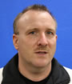

Kay-John Kavanaugh
Rank: Nidan (2nd dan)
Member Since: 2007
Kay-John began his judo career in Germany at the age of 12 under Sensei Günther Hoßfeld. He was a
member of both the State of Hessen and German Junior National judo teams. Since retiring from competition,
he's become a successful judo referee and coach.
With a Masters of Science degree in Civil Engineering, Kay-John is currently a software consultant for Hewlett
Packard.
In addition to coaching judo, Kay-John holds a US Coast Guard Merchant Marine Master license and is a US
Sailing Offshore Sailing Instructor. He is also a Staff Officer in the US Coast Guard Auxillary.
When he's not on the judo mat he's on the water - spending evenings and weekends on Search & Rescue,
Public Education, and other missions on behalf of the US Coast Guard.
Honors & Achievements:
- Member of German Junior National Team
- US Coast Guard Merchant Marine Master